Automated passability is separate from your verdict. Open the playable lab and rate all eight. These recordings use an external development-only test driver; normal play has no autopilot.
0 runtime errors; 186.6s continuous preview/reload sequence. Physical Pixel performance and driving enjoyment need human testing.
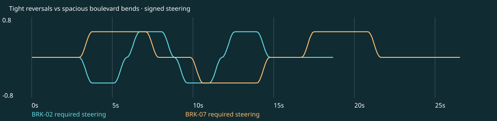
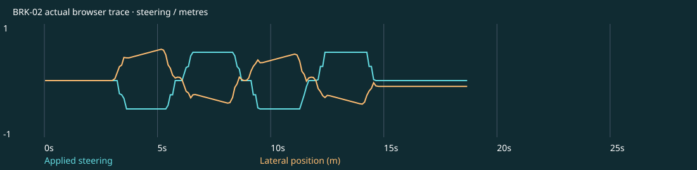
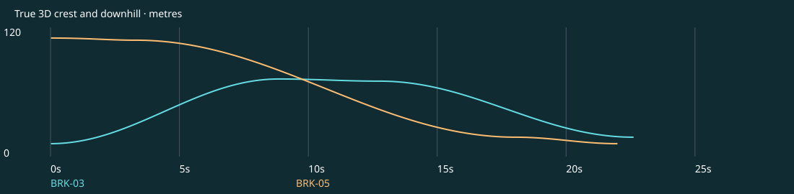
22.62s · 0 off-road samples · seed 7101 · Human UNREVIEWED at delivery
Play this candidate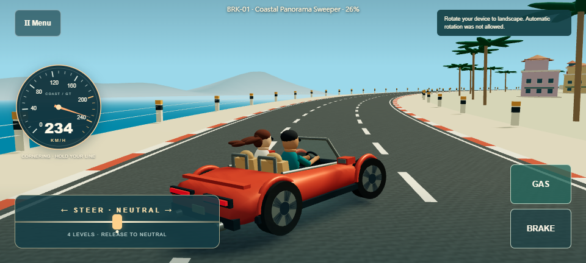
18.68s · 0 off-road samples · seed 7198 · Human UNREVIEWED at delivery
Play this candidate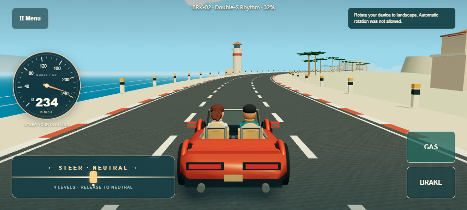
22.62s · 0 off-road samples · seed 7295 · Human UNREVIEWED at delivery
Play this candidate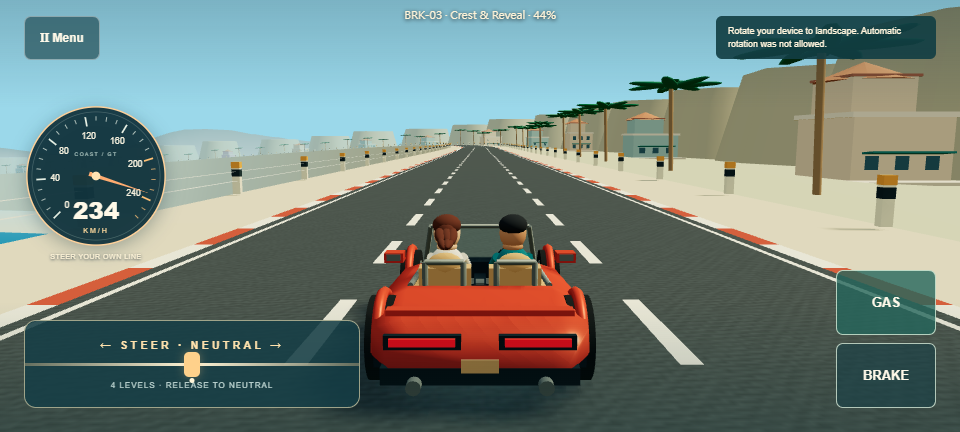
24.28s · 0 off-road samples · seed 7392 · Human UNREVIEWED at delivery
Play this candidate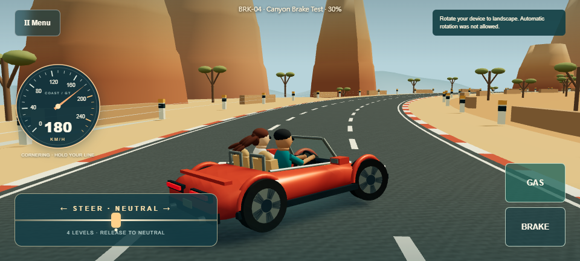
21.99s · 0 off-road samples · seed 7489 · Human UNREVIEWED at delivery
Play this candidate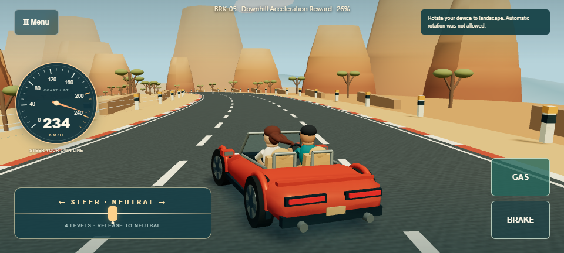
19.67s · 0 off-road samples · seed 7586 · Human UNREVIEWED at delivery
Play this candidate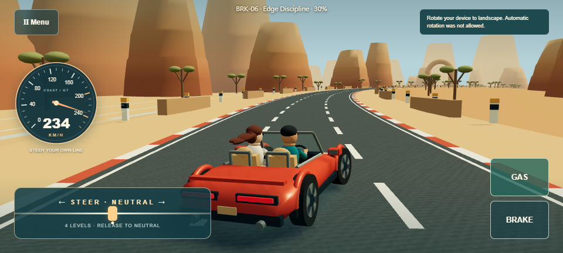
26.54s · 0 off-road samples · seed 7683 · Human UNREVIEWED at delivery
Play this candidate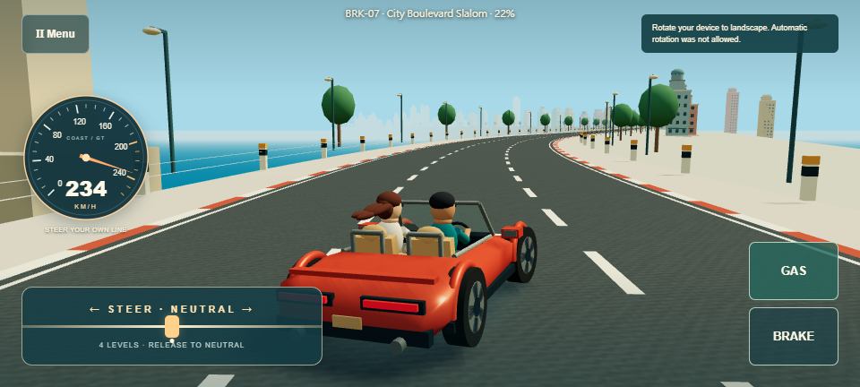
26.64s · 0 off-road samples · seed 7780 · Human UNREVIEWED at delivery
Play this candidate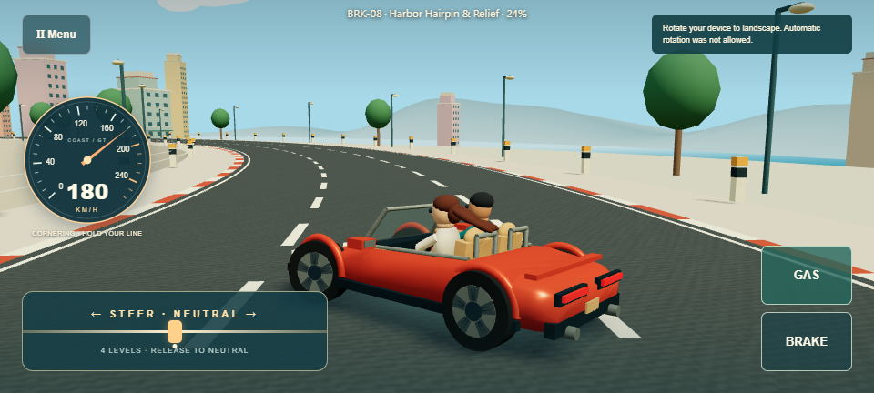
Actual rendered warning approach, crest and descent.
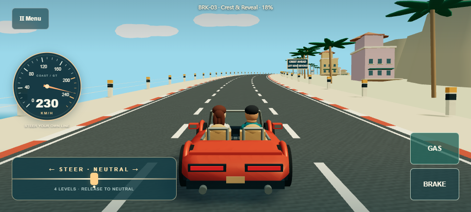
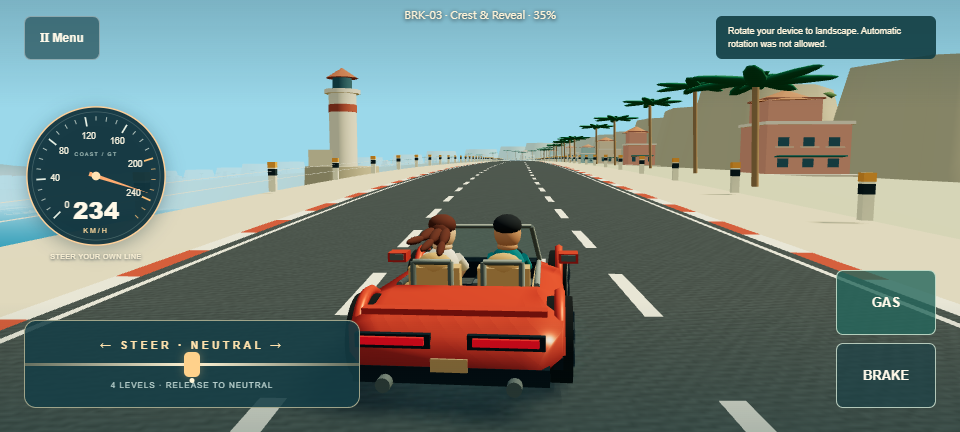
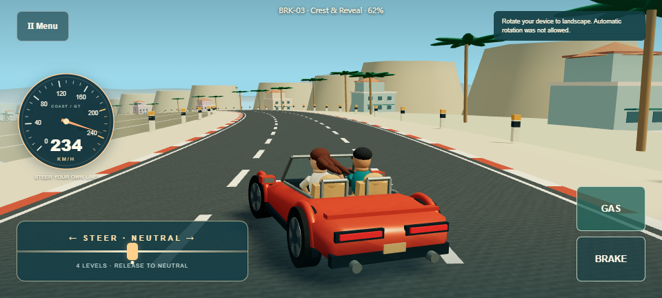
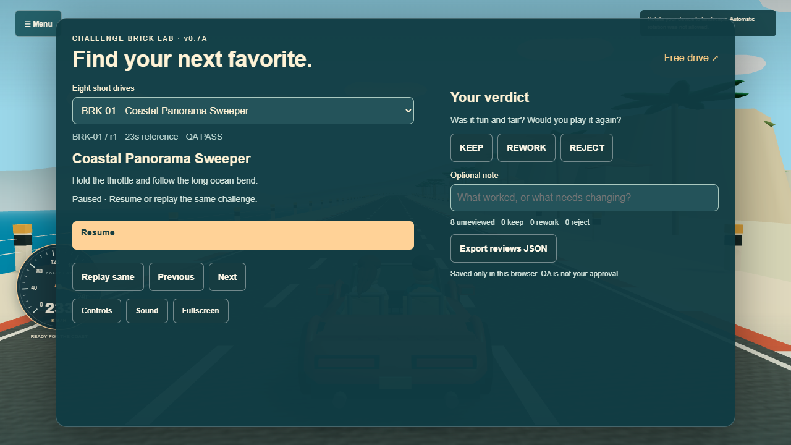
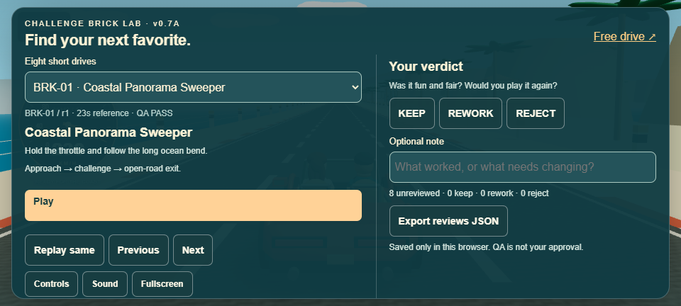
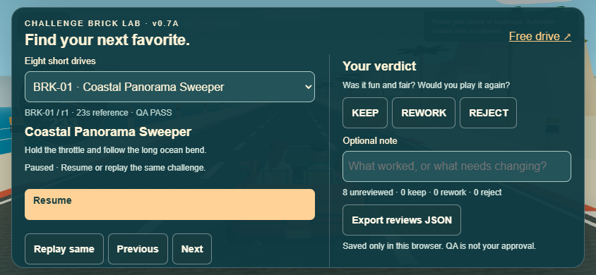